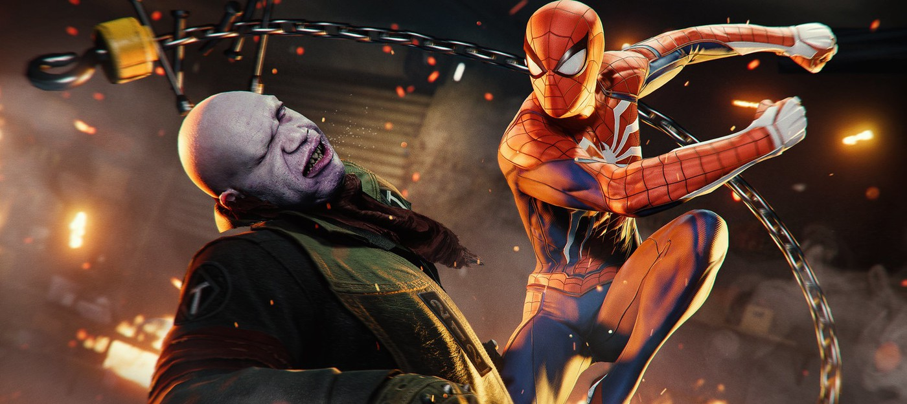
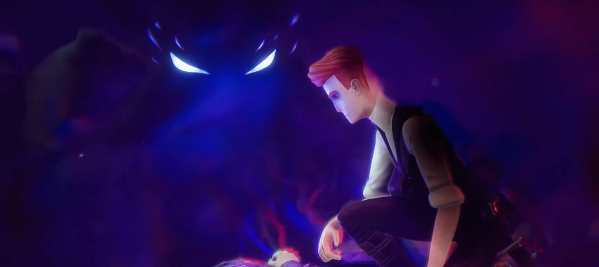
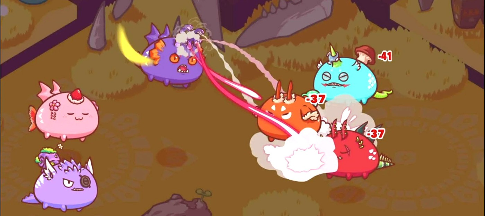
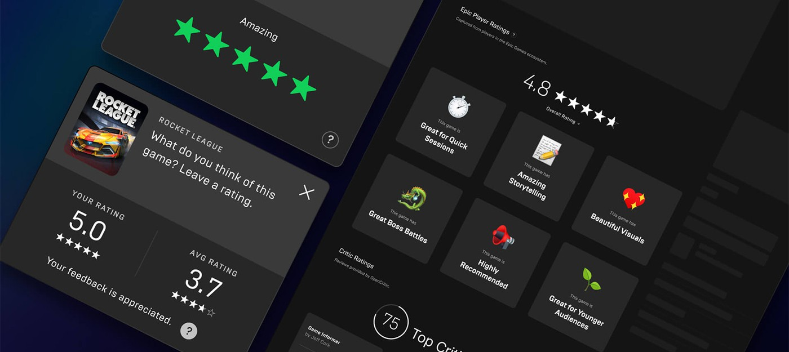
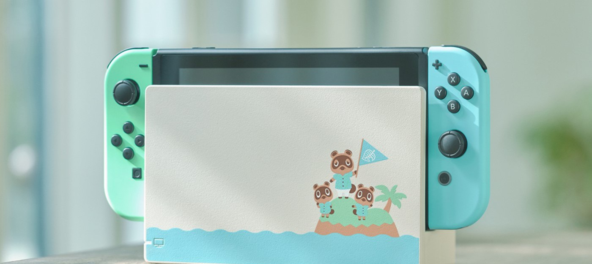
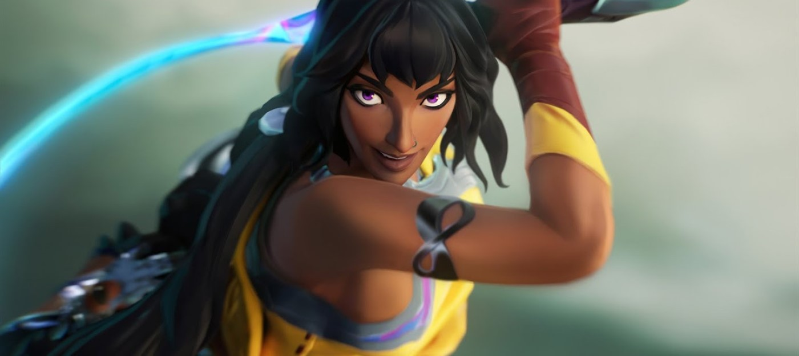
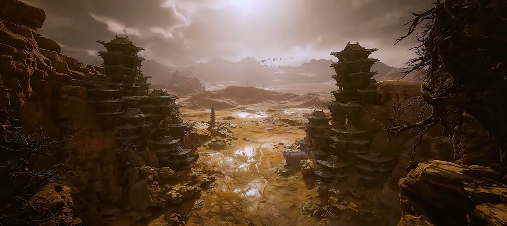

Трассировка лучей и поддержка DualSense — детали и системные требования PC-версии Marvel's Spider-Man
Sony, Insomniac Games и Nixxes Software поделились техническими подробностями PC-версии Marvel's Spider-Man, которая станет доступна в августе этого года. Создатели порта заявили, что геймеры увидят трассировку лучей для отражений, DLSS, сглаживание DLAA и кучу других опций.
Например, порт получит полноценную поддержку мониторов с соотношением сторон 21:9 или 32:9 — также Marvel's Spider-Man сможет работать сразу на трех мониторах, если захотите.
Из дополнительных графических опций появится настройка SSAO, фильтрация текстур, качество детализации объектов, тени и многое другое. Еще Nixxes Software заявляет нативную поддержку DualSense с адаптивными триггерами и отдачей, удобную раскладку под клавиатуру и мышь, а также достижения и облачные сохранения в Steam и Epic Games Store.
Геймплей The Last Case of Benedict Fox — метроидвания про детектива с напарником демоном
Разработчики The Last Case of Benedict Fox, анонсированной на презентации Xbox, опубликовали ролик, в котором подробнее рассказали о своей игре.
Это метроидвания. Главный герой детектив Бенедикс Фокс принялся за расследование убийства молодых супругов и пропажи их ребенка в поместье. Помогать ему будет демон из потустороннего мира.
С помощью уникальных способностей демона детектив сможет изучать воспоминания и эмоции умерших людей, погружаясь в параллельный мир — лимб. Там Фокс столкнется уже с другими демонами, против которых он может применять как орудия из мира настоящего, так и способности личного демона.
Стиль и демон-помощник вдохновлены произведениями Говарда Лавкрафта. Игра выйдет весной 2023 года на PC и Xbox Series S|X.
Жертвы взлома игры Axie Infinity получат лишь треть от потерянных средств
Студия Sky Mavis — разработчик блокчейн игры Axie Infinity, сообщила, что начнет возмещать средства жертвам взлома, в результате которого было похищено $617 миллионов в криптовалюте. Хак произошел ранее в этом году, тогда злоумышленники вывели со счетов $25.5 миллионов в USDC и 173600 Ether, стоимость которого на тот момент составляла $591.2 миллиона. Согласно расследованию ФБР, за взломом стояла группа северокорейских хакеров.
Как заявила студия, пострадавшие от взлома игроки Axie Infinity смогут вернуть равнозначную сумму в Ether, которую они потеряли во время взлома. Однако если учесть, что со взлома в марте стоимость Ethereum рухнула в три раза, то Sky Mavis возместит лишь $216.5 миллионов пострадавшим. Однако учитывая волатильность криптовалют, есть шанс, что однажды ETH снова достигнет прошлых высот.
В апреле Sky Mavis привлекла $150 миллионов инвестиций для помощи в выплате пострадавшим. Возврат средств начнется 28 июня.
Axie Infinity — самая популярная игра из категории "игра-и-зарабатывай", где игроки коллекционируют и генерируют NFT-существ, которых можно отправлять на битвы друг с другом. Эти NFT можно продавать другим игрокам, за что студия берет процент. На февраль этого года Axie Infinity провела операций с NFT на 4 миллиарда долларов.
Однако сейчас, когда рынок NFT лишился большей части своего хайпа, число игроков Axie Infinity упало с 2.7 миллионов в ноябре до четверти от этого значения в мае.
В Fall Guys сыграло 20 миллионов человек после перехода на условно-бесплатную модель

Разработчики Fall Guys объявили в твиттере, что спустя 48 часов после перехода на условно-бесплатную модель в игру сыграло более 20 миллионов человек.
Этому результату, конечно, также поспособствовал релиз на консоли Xbox и Nintendo Switch. Ранее игра была доступна только на PlayStation и PC.
Также у Fall Guys появилась полная поддержка кроссплея между всеми платформами и кросс-прогресс.
Ещё разработчики добавят в королевскую битву редактор карт, однако дату его выхода не назвали.
МИД РФ: Китай готов заменить иностранных производителей технологий на российском рынке
Посол России в Пекине Андрей Денисов заявил, что Китай готов заменить иностранных производителей в сфере технологий, микроэлектроники, автомобилей на российском рынке. Многие компании пока боятся вторичных санкций.
Место на нашем рынке освобождается. Китайские компании-производители различных видов продукции готовы занять на нём место, но для того, чтобы освоиться… нужно какое-то время.
Андрей ДенисовРанее о своём уходе из России объявили Acronis, Arbor (Netscout), Atlassian (Jira), Autodesk, Avast, AWS, Canonical, Coursera, Citrix, Docker, ESET, Figma, Fiverr, Globalstar, GoDaddy, Google Cloud, Grammarly, IBM, Microsoft и ряд других крупных компаний.
Пекин, в свою очередь, готов воспользоваться открывающимися на российском рынке возможностями.
Epic Games Store получил систему рейтингов для борьбы с ревью-бомбингом
Epic Games Store продолжает получать обновления функционала — не так быстро и не так масштабно как хотелось бы многим, но хоть что-то. На этот раз разработчики решили взяться за систему пользовательских обзоров.
Недавнее обновление добавило в EGS систему рейтингов и опросов, которые геймеры будут видеть через определенные промежутки времени, сыграв в ту или иную игру. Собранная таким образом информация станет использоваться для наполнения страничек игр.
Одна из особенностей такой системы в том, что она лишает возможности проводить координированные акции. Пользовательские обзоры сейчас популярнее, чем мнения профессиональных критиков во многих сферах, но их открытость — это уязвимость для манипуляции. В частности речь идет о ревью-бомбинге, когда продукты и игры в частности, заваливают негативными отзывами. Причем, в такой ситуации в дело вступает стадный инстинкт, когда люди начинают ставить негативные оценки намеренно, присоединяясь к толпе, даже если их опыт вовсе не был таким уж негативным.
Epic пояснила, что их подход может снизить общее число отзывов, однако со временем позволит сформировать общую оценку, которую невозможно коллективно занизить или завысить в короткие сроки. Кроме того такой подход гарантирует, что оценки будут ставить те, кто действительно играл.
Система опросов, в свою очередь, будет включать широкий спектр тем с различными вариантами ответов. Благодаря ответам страницы будут получать определенные тэги, что позволит искать и фильтровать тайтлы.
Единственный минус такой системы в том, что многие геймеры будут просто игнорировать всплывающие окошки, но у EGS много пользователей, так что даже небольшого процента хватит для формирования оценки.
Симулятор охотника Way of the Hunter выйдет в августе
Издатель THQ Nordic опубликовал трейлер симулятора Way of the Hunter, в котором сообщил дату релиза. Выйдет игра 16 августа на PC, PS5 и Xbox Series.
С названием игры разработчики ни разу не шутили: весь ролик мы смотрим на то, как герой куда-то едет. Впрочем, путь охотника пролегал по весьма приятным локациям.
По сюжету, главному герою достается домик, который окружает красивая местность и множество диких зверей. Игрокам предстоит охотиться на живность и следить за своей безопасностью, поскольку не каждый зверь окажется безобидным.
Также сообщается, что играть можно будет вместе с друзьями, то есть устроить настоящую совместную охоту.
LEGO Star Wars: The Skywalker Saga привлекла пять миллионов игроков
Разработчики адвенчуры LEGO Star Wars: The Skywalker Saga объявили в твиттере, что с момента релиза игра привлекла свыше пяти миллионов игроков.
LEGO Star Wars: The Skywalker Saga также показала самый успешный старт среди всех остальных LEGO-игр. Тайтл до сих пор занимает лидирующие позиции в британском и американском чартах продаж.
Адвенчура доступна на PC, PS4, PS5, Xbox One, Xbox Series и Nintendo Switch. Она получила высокие оценки от критиков, некоторые из которых вовсе назвали ее одной из лучших игр по Star Wars.
Продажи Nintendo Switch достигли 25 миллионов в Японии
Nintendo можно поздравить с важным достижением — продажи Switch в Японии достигли 25 миллионов единиц. Они распределились следующим образом: 18 миллионов на обычную консоль, пять миллионов на Lite и два миллиона на OLED.
Это огромная цифра, теперь Switch третья по продаваемости консоль в стране за все время. Она есть у каждого пятого японца. Ей удалось обогнать 3DS. Лучше продажи были только у GameBoy с 32.4 миллионами и Nintendo DS с 32.9 миллионами.
Самой популярной игрой для платформы в стране остается Animal Crossing: New Horizons с 7.26 млн проданных копий. На втором и третьем месте Super Smash Bros. Ultimate и Mario Kart 8 Deluxe.
Пять минут зрелищного геймплея экшена Black Myth: Wukong
Не прошло и полных шести месяцев 2025 года, а Riot Games анонсировала уже четвертого нового чемпиона за этот срок для League of Legends. После Зери, Бел'Вет и Ренаты Гласк ей стала еще одна девушка — Нила.
В ролике она загадочно смотрит на Билджвотер — пиратский город во вселенной игры. Затем нам показывают ее способности: она может атаковать врагов хлыстом, телепортироваться на небольшие расстояния, у нее есть непродолжительный иммунитет к оглушению, а ультимативная способность позволяет создавать область, притягивающую врагов.
Нила будет занимать бот карты и отвечать за нанесение урона. Судя по способностям, это будет довольно опасный враг в умелых руках.
Неизвестно, когда появится Нила в игре, но возможность игры за Бел'Вет появилась спустя три недели с первого релиза.
League of Legends доступна бесплатно на PC.
Пять минут зрелищного геймплея экшена Black Myth: Wukong
На канале GameV появился свежий геймплей амбициозного экшена Black Myth: Wukong. В ролике главный герой сражается с противниками и изучает локации. Все выглядит на удивление зрелищно.
Black Myth: Wukong основана на романе XVI века "Путешествие на Запад", который крайне популярен в Китае. Примечательно, что главный герой романа — царь обезьян Сунь Укуну. За него и предстоит играть.
При разработке студия вдохновлялась God of War. Впрочем, это можно заметить и по геймплею.
Black Myth: WuKong разрабатывают на движке Unreal Engine 5. Точной даты выхода у игры все еще нет, но релиз ожидается на PC и консолях.